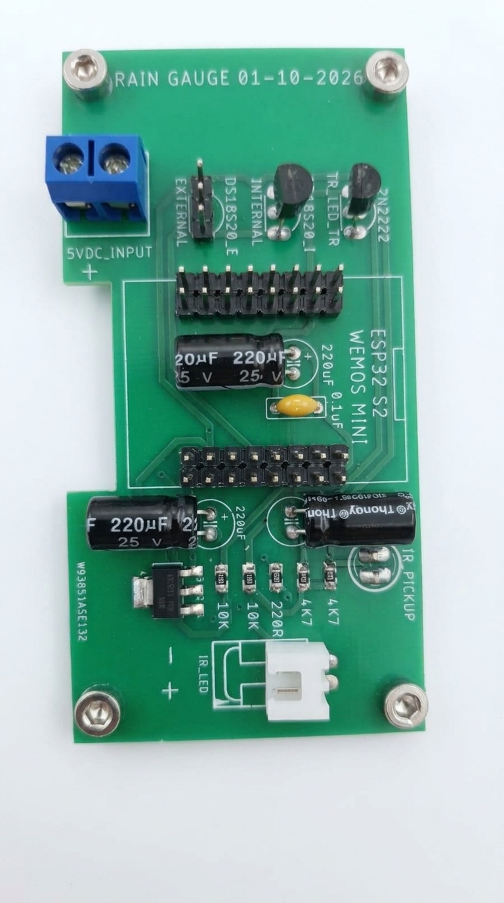
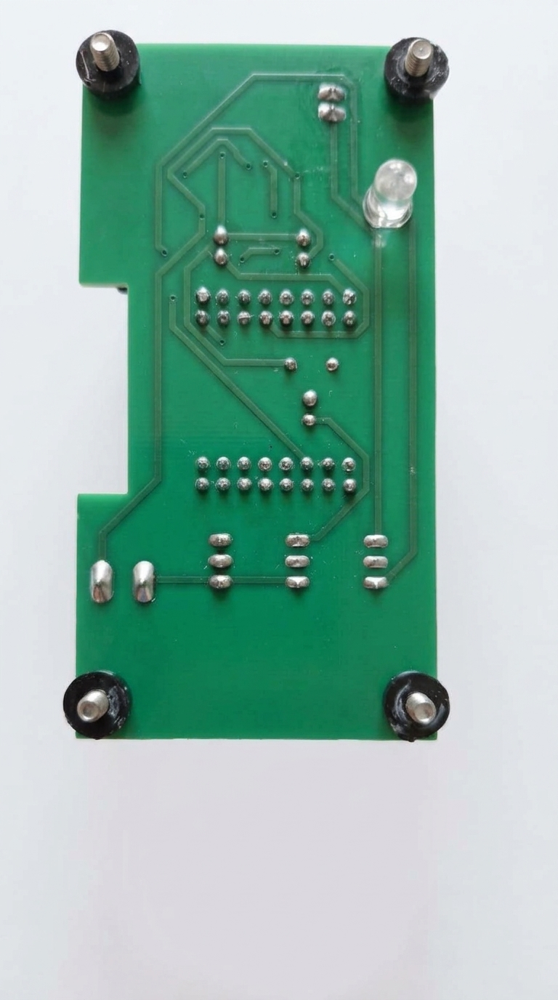
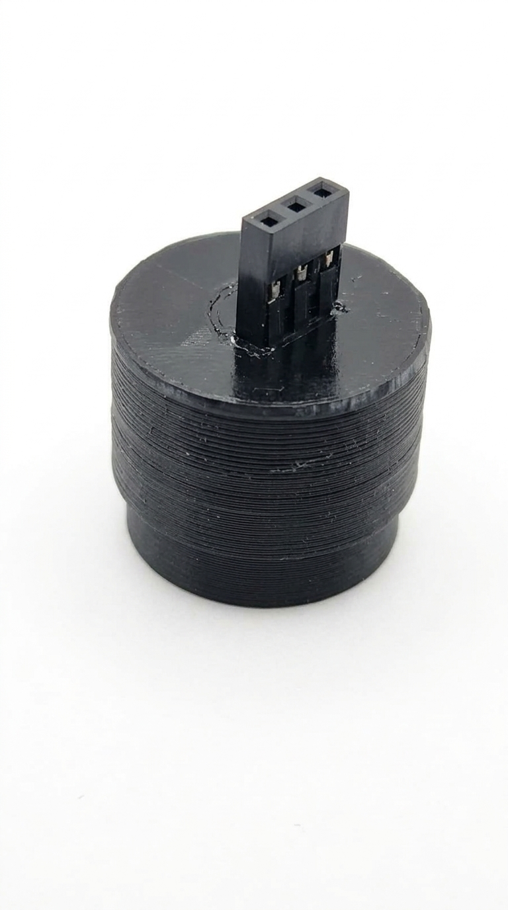
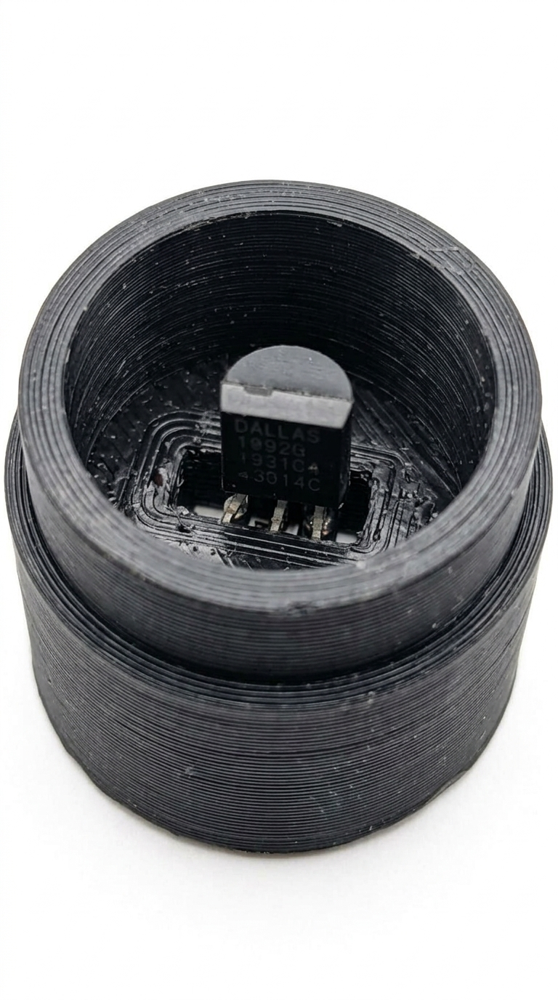
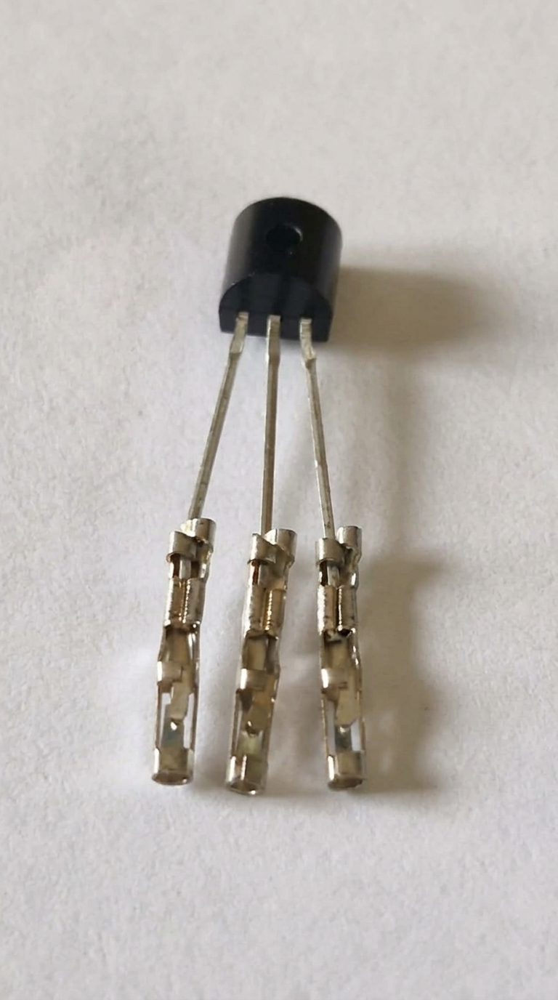
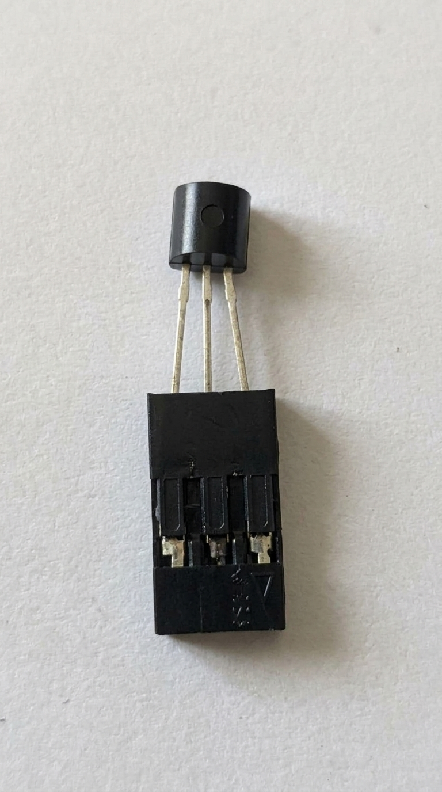

Rain Gauge
User Guide · Build guide (README) · GitHub
Tipping-bucket rain gauge with an IR beam pickup, outside temperature, rainfall reports, a daily soil water balance and an "irrigate today?" answer for an irrigation controller — on a WEMOS LOLIN S2 Mini (ESP32-S2). Everything runs in a web page on your own WiFi.
Install on a new S2 Mini
Firmware version: …
- Plug the S2 Mini into the PC with a USB data cable and press CONNECT above.
- If no port shows up: hold button 0, tap RST, release 0, and try again (after the install tap RST once more).
- Choose Erase for a new board, then Install (about a minute).
First start: choose your WiFi
- The new gauge opens its own WiFi hotspot RainGauge-Setup (the LED blinks fast).
- Connect a phone to it — the setup page opens by itself (otherwise browse to
http://192.168.4.1/). - Pick your network, type the password, choose Automatic (DHCP) or a fixed IP, press SAVE & RESTART.
- Put the phone back on your normal WiFi and open
http://raingauge.local/(or the fixed IP). Use a fixed IP when an irrigation controller must read the gauge.
More networks (e.g. at another place): SETTINGS → WiFi Networks lists them with DELETE and ADD NETWORK (passwords are never shown). The gauge tries the saved networks in range, strongest first — and when several access points share one network name (mesh / multi-AP), the strongest of them. If none can be reached for several minutes, the hotspot opens by itself for 5 minutes, so you can add one from a phone.
Updates
On the gauge's ABOUT page: CHECK FOR UPDATE compares its version with the one on this site; INSTALL FROM GITHUB downloads and installs it. Settings, calibration and the rain history are kept, and a failed download leaves the old firmware running.
No internet at the gauge? Install it with a USB cable from this page (above).
After installing
The User Guide explains every page and setting: HOME, reports, the irrigation answer, calibration, phone alerts, WiFi networks, simulation and updates.
- SETTINGS → CALIBRATION: pour a known amount of water (default 500 ml) slowly into the funnel — the gauge learns how much water one tip is. Set your funnel diameter first.
- SETTINGS → START FRESH once installed and calibrated: clears the test tips, keeps all settings.
- SETTINGS → Irrigation Answer Method: Water Balance, Simple Rule, or No Irrigation (just a rain meter). Also set your latitude, soil type, root depth and garden factor.
- NTFY: free push alerts on your phone (IR sensor fault, high / low outside temperature).
- SIMULATION: try everything without the hardware (made-up tips and temperatures, kept apart from real data).
For an irrigation controller
GET http://<gauge ip>/api/irrigate returns for example
{"irrigate":false,"reason":"Skip - soil still has water: 8.2 of 22.5 mm used","rain_mm":12.4,"mode":"Water Balance",...}
Any device that can make a web request can read it (several at once). Read only "irrigate"
(true / false) and skip watering when it is false.
Hardware
| Part | GPIO | Notes |
|---|---|---|
| IR LED (via 2N2222) | 2 | HIGH = on, 220R from 5 V (~16 mA) |
| IR pickup | 17 | 10k pull-up; LOW = light received, HIGH = beam broken |
| DS18S20 outside | 6 | 4k7 pull-up |
| DS18S20 inside (optional) | 1 | 4k7 pull-up, technical use only |
| Heartbeat LED | 15 | fast blink = WiFi setup hotspot |
PCB (Eagle + gerbers), enclosure STL files and the source code are in the GitHub repository.





